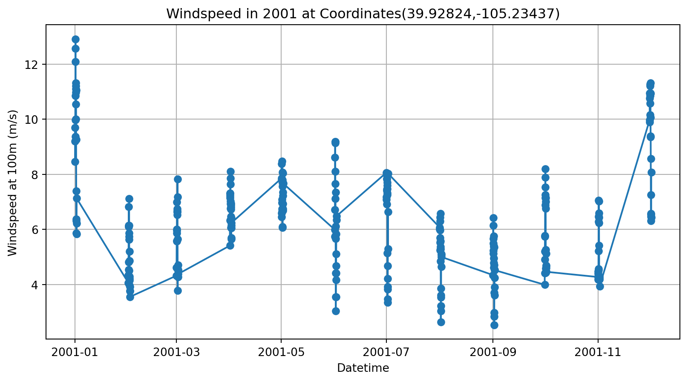
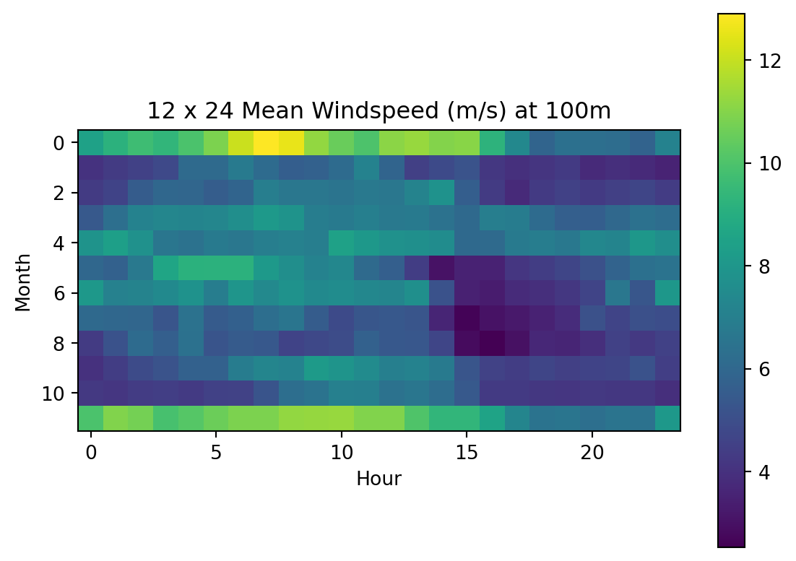
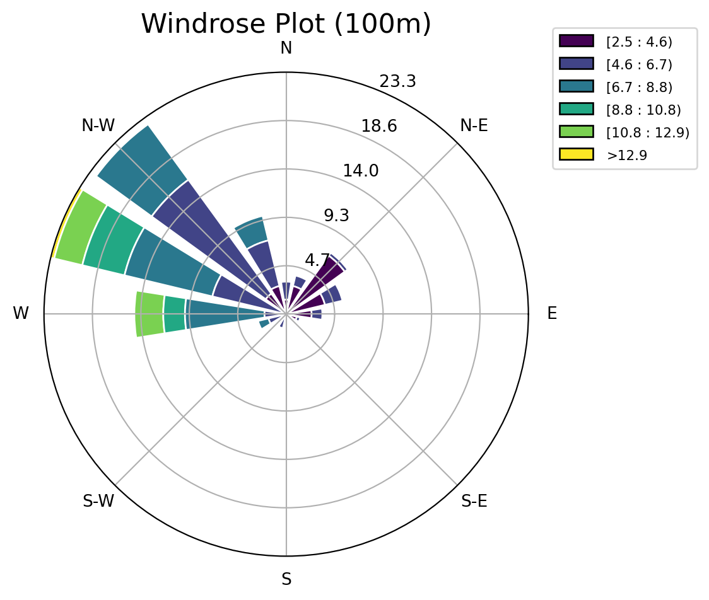
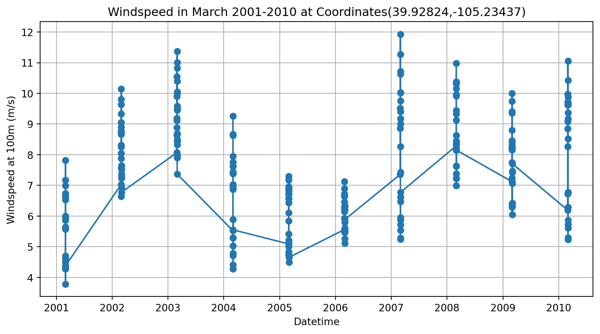

Code
# import package
import pandas as pd
import matplotlib.pyplot as plt
from windwatts_data import WTKLedClient1224
from windrose import WindroseAxesThis notebook guides the user regarding how to fetch timeseries data for a specific/all location at runtime.
Note: The users AWS credentials should be exported in the created environment.
# import package
import pandas as pd
import matplotlib.pyplot as plt
from windwatts_data import WTKLedClient1224
from windrose import WindroseAxesWe have imported WTKLedClient1224 class to work with WTK hourly average data.
# Initialize object to the WTKLedClient1224 and WTKLedClientHourly
# Since the config file is in same directory "notebooks" as the ".ipynb" file, the below config path works.
wtk_1224_client = WTKLedClient1224(config_path='./1224_config.json')Fetching results...: 0polls [00:00, ?polls/s]Fetching results...: 1polls [00:00, 1.70polls/s]Fetching results...: 2polls [00:01, 1.15polls/s]Fetching results...: 3polls [00:03, 1.41s/polls]Fetching results...: 3polls [00:03, 1.26s/polls]Note: fetch_timeseries_1224() is a safe function(fast and less cost) as it doesn’t allow user to fetch data related to more that 16 nearest location with respect to the given coordinates.
df = wtk_1224_client.fetch_timeseries_1224(lat=39.92824,long=-105.23437,heights=[100],years=[2001])Fetching results...: 0polls [00:00, ?polls/s]Fetching results...: 1polls [00:00, 1.80polls/s]Fetching results...: 1polls [00:00, 1.63polls/s]print(df) winddirection_100m windspeed_100m year mohr index
0 304.61 8.46 2001 101 0f1c63
1 295.51 9.20 2001 102 0f1c63
2 291.72 9.69 2001 103 0f1c63
3 294.93 9.37 2001 104 0f1c63
4 289.00 9.98 2001 105 0f1c63
.. ... ... ... ... ...
283 236.85 6.57 2001 1220 0f1c63
284 213.33 6.31 2001 1221 0f1c63
285 209.64 6.54 2001 1222 0f1c63
286 291.12 6.44 2001 1223 0f1c63
287 257.97 8.08 2001 1224 0f1c63
[288 rows x 5 columns]In 1224 timeseries data, each file has 288 rows(24 hours * 12 months)[hourly averages for each month] for each location at a specific year. mohr stands for MMHH.
# parsing mohr column in datetime to plot timeseries data.
df['month'],df['hour'] = df['mohr']//100, df['mohr']%100
df['datetime'] = pd.to_datetime(dict(year=df['year'],month=df['month'],day=1,hour=df['hour']))
df = df.sort_values('datetime')print(df) winddirection_100m windspeed_100m year mohr index month hour \
0 304.61 8.46 2001 101 0f1c63 1 1
1 295.51 9.20 2001 102 0f1c63 1 2
2 291.72 9.69 2001 103 0f1c63 1 3
3 294.93 9.37 2001 104 0f1c63 1 4
4 289.00 9.98 2001 105 0f1c63 1 5
.. ... ... ... ... ... ... ...
283 236.85 6.57 2001 1220 0f1c63 12 20
284 213.33 6.31 2001 1221 0f1c63 12 21
285 209.64 6.54 2001 1222 0f1c63 12 22
286 291.12 6.44 2001 1223 0f1c63 12 23
287 257.97 8.08 2001 1224 0f1c63 12 24
datetime
0 2001-01-01 01:00:00
1 2001-01-01 02:00:00
2 2001-01-01 03:00:00
3 2001-01-01 04:00:00
4 2001-01-01 05:00:00
.. ...
283 2001-12-01 20:00:00
284 2001-12-01 21:00:00
285 2001-12-01 22:00:00
286 2001-12-01 23:00:00
287 2001-12-02 00:00:00
[288 rows x 8 columns]plt.figure(figsize=(10,5))
plt.plot(df['datetime'],df['windspeed_100m'],marker='o')
plt.ylabel("Windspeed at 100m (m/s)")
plt.xlabel("Datetime")
plt.grid(True)
plt.title("Windspeed in 2001 at Coordinates(39.92824,-105.23437)")Text(0.5, 1.0, 'Windspeed in 2001 at Coordinates(39.92824,-105.23437)')
# Windspeed statistics
agg = df.reset_index().pivot(index="month",columns="hour",values="windspeed_100m")
agg| hour | 1 | 2 | 3 | 4 | 5 | 6 | 7 | 8 | 9 | 10 | ... | 15 | 16 | 17 | 18 | 19 | 20 | 21 | 22 | 23 | 24 |
|---|---|---|---|---|---|---|---|---|---|---|---|---|---|---|---|---|---|---|---|---|---|
| month | |||||||||||||||||||||
| 1 | 8.46 | 9.20 | 9.69 | 9.37 | 9.98 | 10.86 | 12.09 | 12.91 | 12.57 | 11.21 | ... | 10.98 | 11.06 | 9.26 | 7.39 | 5.86 | 6.38 | 6.31 | 6.22 | 5.84 | 7.13 |
| 2 | 4.06 | 4.34 | 4.54 | 4.81 | 6.10 | 6.11 | 6.82 | 6.15 | 5.64 | 5.74 | ... | 4.86 | 5.20 | 4.21 | 3.96 | 4.15 | 4.29 | 3.76 | 3.92 | 3.76 | 3.55 |
| 3 | 4.32 | 4.62 | 5.57 | 6.00 | 5.95 | 5.58 | 5.87 | 6.99 | 6.64 | 6.63 | ... | 7.82 | 5.65 | 4.33 | 3.78 | 4.29 | 4.53 | 4.28 | 4.51 | 4.70 | 4.38 |
| 4 | 5.41 | 6.33 | 7.15 | 7.30 | 7.23 | 7.31 | 7.64 | 8.11 | 7.86 | 6.93 | ... | 6.46 | 6.07 | 6.95 | 6.88 | 6.15 | 5.69 | 5.65 | 6.05 | 6.40 | 6.24 |
| 5 | 7.85 | 8.38 | 7.79 | 6.59 | 6.45 | 6.75 | 6.65 | 6.97 | 7.09 | 6.96 | ... | 7.57 | 6.06 | 6.10 | 6.75 | 6.93 | 6.69 | 7.34 | 7.22 | 8.04 | 7.67 |
| 6 | 5.99 | 5.74 | 6.72 | 8.62 | 9.14 | 9.19 | 9.18 | 8.11 | 7.65 | 7.12 | ... | 3.04 | 3.54 | 3.54 | 4.16 | 4.42 | 4.68 | 5.10 | 5.84 | 6.35 | 6.48 |
| 7 | 8.06 | 7.08 | 7.17 | 7.45 | 7.84 | 6.91 | 7.96 | 7.41 | 7.82 | 7.47 | ... | 5.14 | 3.47 | 3.34 | 3.82 | 3.92 | 4.21 | 4.67 | 6.63 | 5.30 | 8.03 |
| 8 | 6.07 | 6.00 | 5.97 | 5.25 | 6.43 | 5.53 | 5.70 | 6.29 | 6.57 | 5.57 | ... | 3.61 | 2.63 | 3.04 | 3.22 | 3.53 | 3.86 | 5.10 | 4.65 | 5.07 | 5.00 |
| 9 | 4.34 | 5.13 | 6.14 | 5.66 | 6.42 | 5.23 | 5.49 | 5.37 | 4.61 | 4.78 | ... | 4.70 | 2.83 | 2.53 | 2.98 | 3.70 | 3.61 | 3.91 | 4.54 | 4.25 | 4.52 |
| 10 | 3.99 | 4.42 | 4.91 | 5.20 | 5.74 | 5.77 | 6.89 | 7.25 | 7.15 | 8.19 | ... | 6.76 | 5.26 | 4.58 | 4.43 | 4.69 | 4.48 | 4.60 | 4.68 | 5.13 | 4.46 |
| 11 | 4.27 | 4.18 | 4.39 | 4.47 | 4.29 | 4.52 | 4.56 | 5.21 | 6.28 | 6.47 | ... | 6.23 | 5.42 | 4.28 | 4.28 | 4.20 | 4.18 | 4.27 | 4.23 | 4.20 | 3.94 |
| 12 | 9.97 | 10.94 | 10.76 | 9.90 | 10.16 | 10.58 | 10.85 | 10.86 | 11.21 | 11.27 | ... | 9.36 | 9.38 | 8.56 | 7.25 | 6.47 | 6.57 | 6.31 | 6.54 | 6.44 | 8.08 |
12 rows × 24 columns
plt.imshow(agg)
plt.xlabel("Hour")
plt.ylabel("Month")
plt.title("12 x 24 Mean Windspeed (m/s) at 100m")
plt.colorbar()
fig = plt.figure(figsize=(5, 5)) # Width=10, Height=8 in inches
ax = WindroseAxes.from_ax(fig=fig)
ax.bar(df['winddirection_100m'], df['windspeed_100m'], normed=True, opening=0.8, edgecolor='white')
ax.set_legend(loc=(1.05, 0.8))
plt.suptitle("Windrose Plot (100m)", fontsize=16, y=1)
plt.show()
df = wtk_1224_client.fetch_timeseries_1224(lat=39.92824,long=-105.23437,heights=[100], years=[2001,2002,2003,2004,2005,2006,2007,2008,2009,2010])Fetching results...: 0polls [00:00, ?polls/s]Fetching results...: 1polls [00:00, 1.77polls/s]Fetching results...: 1polls [00:00, 1.59polls/s]df| winddirection_100m | windspeed_100m | year | mohr | index | |
|---|---|---|---|---|---|
| 0 | 315.81 | 6.28 | 2004 | 101 | 0f1c63 |
| 1 | 316.53 | 6.32 | 2004 | 102 | 0f1c63 |
| 2 | 308.08 | 6.65 | 2004 | 103 | 0f1c63 |
| 3 | 318.11 | 7.20 | 2004 | 104 | 0f1c63 |
| 4 | 312.66 | 7.56 | 2004 | 105 | 0f1c63 |
| ... | ... | ... | ... | ... | ... |
| 2875 | 303.29 | 5.72 | 2007 | 1220 | 0f1c63 |
| 2876 | 31.60 | 6.08 | 2007 | 1221 | 0f1c63 |
| 2877 | 85.07 | 5.98 | 2007 | 1222 | 0f1c63 |
| 2878 | 332.10 | 4.91 | 2007 | 1223 | 0f1c63 |
| 2879 | 302.55 | 5.98 | 2007 | 1224 | 0f1c63 |
2880 rows × 5 columns
# parsing mohr column in datetime to plot timeseries data.
df['month'],df['hour'] = df['mohr']//100, df['mohr']%100
df['datetime'] = pd.to_datetime(dict(year=df['year'],month=df['month'],day=1,hour=df['hour']))
df = df.sort_values('datetime')df_march = df[df['month']==3]
plt.figure(figsize=(10,5))
plt.plot(df_march['datetime'],df_march['windspeed_100m'],marker='o')
plt.ylabel("Windspeed at 100m (m/s)")
plt.xlabel("Datetime")
plt.grid(True)
plt.title("Windspeed in March 2001-2010 at Coordinates(39.92824,-105.23437)")Text(0.5, 1.0, 'Windspeed in March 2001-2010 at Coordinates(39.92824,-105.23437)')
df| winddirection_100m | windspeed_100m | year | mohr | index | month | hour | datetime | |
|---|---|---|---|---|---|---|---|---|
| 1440 | 304.61 | 8.46 | 2001 | 101 | 0f1c63 | 1 | 1 | 2001-01-01 01:00:00 |
| 1441 | 295.51 | 9.20 | 2001 | 102 | 0f1c63 | 1 | 2 | 2001-01-01 02:00:00 |
| 1442 | 291.72 | 9.69 | 2001 | 103 | 0f1c63 | 1 | 3 | 2001-01-01 03:00:00 |
| 1443 | 294.93 | 9.37 | 2001 | 104 | 0f1c63 | 1 | 4 | 2001-01-01 04:00:00 |
| 1444 | 289.00 | 9.98 | 2001 | 105 | 0f1c63 | 1 | 5 | 2001-01-01 05:00:00 |
| ... | ... | ... | ... | ... | ... | ... | ... | ... |
| 2299 | 324.16 | 6.30 | 2010 | 1220 | 0f1c63 | 12 | 20 | 2010-12-01 20:00:00 |
| 2300 | 294.56 | 6.43 | 2010 | 1221 | 0f1c63 | 12 | 21 | 2010-12-01 21:00:00 |
| 2301 | 308.61 | 7.08 | 2010 | 1222 | 0f1c63 | 12 | 22 | 2010-12-01 22:00:00 |
| 2302 | 304.40 | 6.25 | 2010 | 1223 | 0f1c63 | 12 | 23 | 2010-12-01 23:00:00 |
| 2303 | 323.77 | 6.49 | 2010 | 1224 | 0f1c63 | 12 | 24 | 2010-12-02 00:00:00 |
2880 rows × 8 columns
df = wtk_1224_client.fetch_timeseries_1224(lat=39.92824,long=-105.23437,heights=[100,40],years=[2001,2004],n_nearest=2)Fetching results...: 0polls [00:00, ?polls/s]Fetching results...: 1polls [00:00, 1.80polls/s]Fetching results...: 1polls [00:00, 1.64polls/s]df| winddirection_100m | winddirection_40m | windspeed_100m | windspeed_40m | year | mohr | index | |
|---|---|---|---|---|---|---|---|
| 0 | 304.61 | 305.85 | 8.46 | 6.54 | 2001 | 101 | 0f1c63 |
| 1 | 295.51 | 292.57 | 9.20 | 7.33 | 2001 | 102 | 0f1c63 |
| 2 | 291.72 | 288.00 | 9.69 | 8.06 | 2001 | 103 | 0f1c63 |
| 3 | 294.93 | 282.34 | 9.37 | 8.08 | 2001 | 104 | 0f1c63 |
| 4 | 289.00 | 282.48 | 9.98 | 8.56 | 2001 | 105 | 0f1c63 |
| ... | ... | ... | ... | ... | ... | ... | ... |
| 1147 | 333.50 | 6.35 | 5.23 | 4.52 | 2001 | 1220 | 0f1c64 |
| 1148 | 203.44 | 149.45 | 5.73 | 5.07 | 2001 | 1221 | 0f1c64 |
| 1149 | 244.67 | 236.84 | 6.05 | 5.24 | 2001 | 1222 | 0f1c64 |
| 1150 | 293.86 | 341.04 | 5.64 | 4.41 | 2001 | 1223 | 0f1c64 |
| 1151 | 243.78 | 210.51 | 7.16 | 4.58 | 2001 | 1224 | 0f1c64 |
1152 rows × 7 columns
df['index'].value_counts()index
0f1c63 576
0f1c64 576
Name: count, dtype: int64Each index maps to an unique coordinate on the grid. We have 2 unique indexes here because user requested data for 2 nearest locations.
# location_gdf for wtk data
loc_gdf = wtk_1224_client.get_location_gdf()
print(loc_gdf) index latitude longitude geometry
0 000000 50.982258 -162.061630 POINT (-162.06163 50.98226)
1 000001 51.010925 -162.099060 POINT (-162.09906 51.01092)
2 000002 51.039566 -162.136520 POINT (-162.13652 51.03957)
3 000003 51.068195 -162.174010 POINT (-162.17401 51.0682)
4 000004 51.096817 -162.211580 POINT (-162.21158 51.09682)
... ... ... ... ...
2599772 27ab5c 20.954578 -61.076538 POINT (-61.07654 20.95458)
2599773 27ab5d 20.983326 -61.056640 POINT (-61.05664 20.98333)
2599774 27ab5e 21.012074 -61.036743 POINT (-61.03674 21.01207)
2599775 27ab5f 21.040829 -61.016785 POINT (-61.01678 21.04083)
2599776 27ab60 21.069584 -60.996857 POINT (-60.99686 21.06958)
[2599777 rows x 4 columns]# Retrieving coordinates from index values
print(loc_gdf.loc[loc_gdf['index'] == '0f1c63'])
print(loc_gdf.loc[loc_gdf['index'] == '0f1c64']) index latitude longitude geometry
990307 0f1c63 39.913254 -105.23915 POINT (-105.23915 39.91325)
index latitude longitude geometry
990308 0f1c64 39.950325 -105.2381 POINT (-105.2381 39.95032)df = wtk_1224_client.fetch_timeseries_1224(lat=39.92824,long=-105.23437,heights=[20],years=[2001,2004],n_nearest=2)Fetching results...: 0polls [00:00, ?polls/s]Fetching results...: 1polls [00:00, 1.77polls/s]Fetching results...: 1polls [00:00, 1.60polls/s]df['year'].value_counts()year
2004 576
2001 576
Name: count, dtype: int64df['index'].value_counts()index
0f1c64 576
0f1c63 576
Name: count, dtype: int64We have 576 records because we have data for 2 location per year.
Note: If you see the columns using wtk.get_column_names(), the height 20m doesn’t exist in the data. So, the data at the adjacent heights will be fetched.